Invoice project milestones¶
Invoicing based on project milestones can be used for expensive or large-scale projects. The series of milestones in a project represent a clear sequence of work that will inevitably result in the completion of a project and/or contract.
This method of invoicing ensures the company gets a consistent flow of money throughout the lifetime of the project. Customers can closely monitor every phase of the project’s development as it happens, in addition to paying a large bill in several installments, instead of all at once.
Create milestone products¶
In Odoo, each milestone of a project is considered as an individual product.
To create and/or configure products to work like this, first navigate to . Then, click on a product, or create a new one by clicking New.
The option to invoice based on milestones is only available for certain product types.
On the product form, under the General Information tab, the Product Type field must be set on any of the following options: Service, or Entrada del evento.
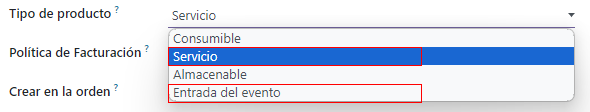With any of those Product Type options selected, choose Based on Milestones from the Invoicing Policy drop-down menu.
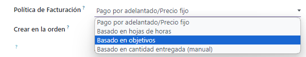Beneath that is the Create on Order field.
To ensure workflows are as seamless as possible, it is recommended that an option in the Create on Order field is selected.
Note
Leaving it on the default Nothing option won’t negatively affect the desired workflow. However, a project must then be created directly from a sales order form with that specific product. Once a project is created then milestones and tasks can be created and configured.
When the Create on Order default option of Nothing is clicked, a drop-down menu is revealed with the following options:
Task: Odoo creates a task related to this milestone product in the Projects app when this specific product is ordered.
Project & Task: Odoo creates a project and task related to this milestone product in the Projects app when this specific product is ordered.
Project: Odoo creates a project related to this milestone product in the Projects app when this specific product is ordered.
When Task is selected, a Project field appears. In this field, select to which existing project in the Projects app this created task should be connected.
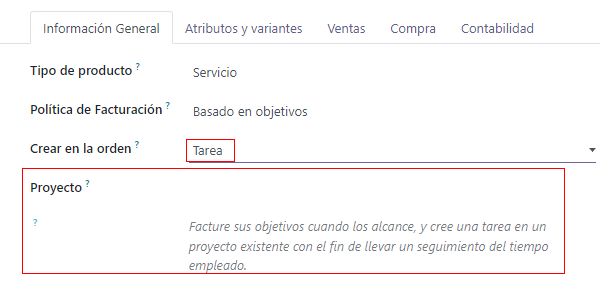When Project & Task or Project is selected, two new fields appear: Project Template and Workspace Template.
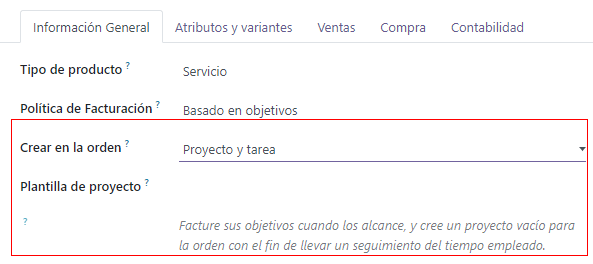The Project Template field provides template options to use for the project that will be created when this specific product is ordered.
The Workspace Template field provides template options to use for the workspace (for the Documents app, not the Projects app) that will be automatically generated for the project when this specific product is ordered.
Tip
For organizational purposes, click the Sales tab on the product form, and enter a custom ‘Milestone’ related descriptor in the Sales Description field. This information appears in the Description column on the Order Lines tab of the sales order.
Or, directly edit/modify the Description field on the Order Lines tab of the sales order.
This is not a requirement.
Invoice milestones¶
Note
The following flow features a trio of milestone products that have Service set as their Product Type, and Task set on their Create on Order field.
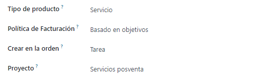
Those tasks are then attached to a pre-existing Project, which, in this case, is titled, Rebranding Projects.
To invoice milestones, create a sales order with the milestone product(s). To do that, go to . Doing so reveals a blank quotation form.
From this quotation form, add a Customer. Then, click Add a product in the Order Lines tab. Next, add the milestone product(s) to the Order Lines tab.
Once the corresponding milestone product(s) have been added, click Confirm to confirm the order, which turns the quotation into a sales order.
When the order is confirmed, new smart buttons appear at the top of the sales order based on what was selected in the Create on Order field on the product form.
From the sales order, click the Milestones smart button. Doing so reveals a blank Milestones page. Click New to add milestones.
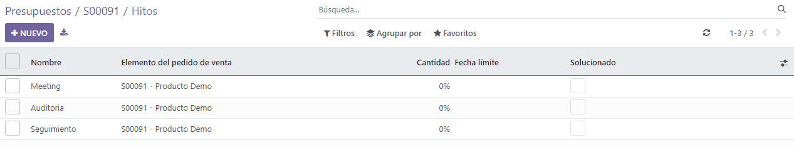Enter a Name for the milestone. Next, apply it to the corresponding Sales Order Item. Lastly, assign a Deadline to the milestone, if desired.
Repeat that process for all milestone sales order items.
Then, return to the sales order, via the breadcrumbs. From the sales order, click the Tasks smart button. Doing so reveals a Tasks page with a task for each sales order item with that option designated in the Create on Order field.
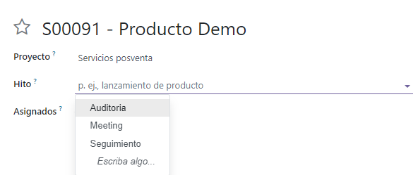To manually assign a configured milestone to a task, click the desired task, which reveals the task form. On the task form, select the appropriate milestone to which this task should be connected, in the Milestone field.
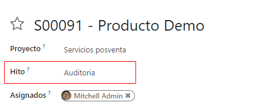Repeat this process for all milestone tasks.
With those tasks properly configured, employees log in their progress as they work on the task, in addition to adding any notes related to the task.
Then, when that task is complete, that means that milestone has been reached. At that point, it is time to invoice that milestone.
To invoice a milestone, first return to the sales order — either via the breadcrumb links, or by navigating to and picking the appropriate sales order.
Back on the sales order form, click the Milestones smart button, and check the box in the Reached column for that particular task.
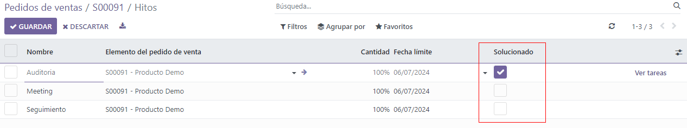Next, return to the sales order — either by clicking View Sales Order on the Milestones page, or via the breadcrumb links.
Back on the sales order, the line item for the milestone that’s been reached has its Delivered column filled. That’s because the milestone has been reached, and therefore delivered.

Click Create Invoice in the upper-left corner. Doing so reveals a Create invoices pop-up window.
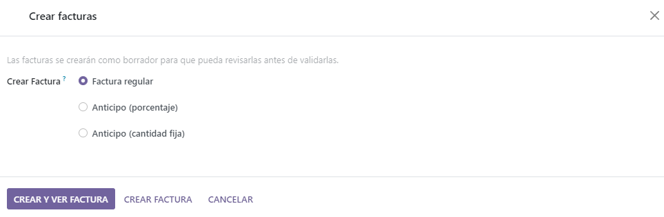On the Create invoices pop-up window, leave the Create Invoice option on the default Regular Invoice selection, and click the Create Draft Invoice button.
Upon clicking Create Draft Invoice, Odoo reveals the Customer Invoice Draft, only showing that reached milestone in the Invoice Lines tab.

From this invoice page, click the Confirm button to confirm the invoice. Then, when the customer has paid for this milestone, click Register Payment.
When Register Payment is clicked, a Register Payment pop-up window appears.
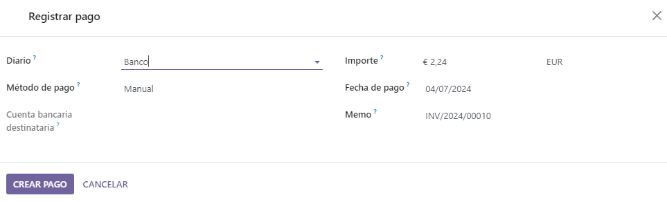On this pop-up window, confirm the accuracy of the auto-populated fields, then click Create Payment.
When clicked, the pop-up window disappears, and Odoo returns to the invoice for that milestone, which now has a green In Payment banner in the upper-right corner. This banner signifies the invoice has been paid.
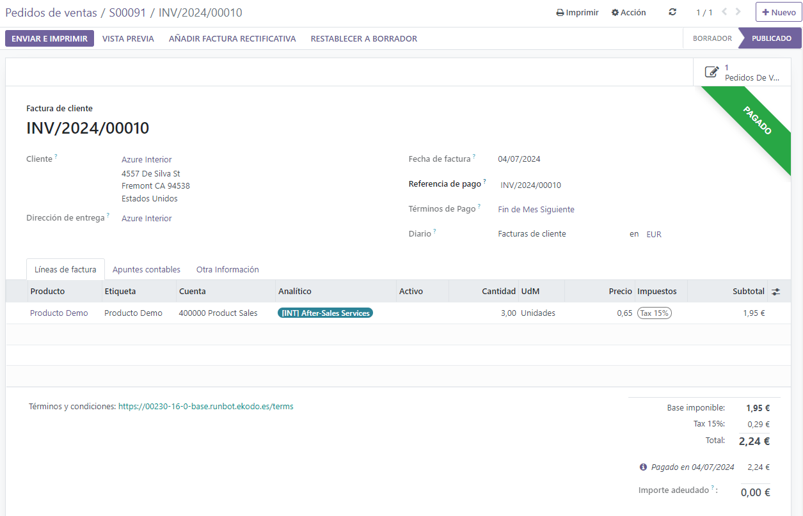Then, return to the sales order, via the breadcrumb links. Back on the sales order, in the Order Lines tab, the reached milestone that’s been invoiced and paid for, now has its Invoiced column filled.

There is also a new Invoices smart button at the top of the sales order. Clicking that reveals all the invoices that are connected to this sales order.
Simply repeat the above process for each milestone as it is worked on, and subsequently, completed.
Continue that process until the entire project has been completed, each milestone has been invoiced, and the entire order has been paid for in full.